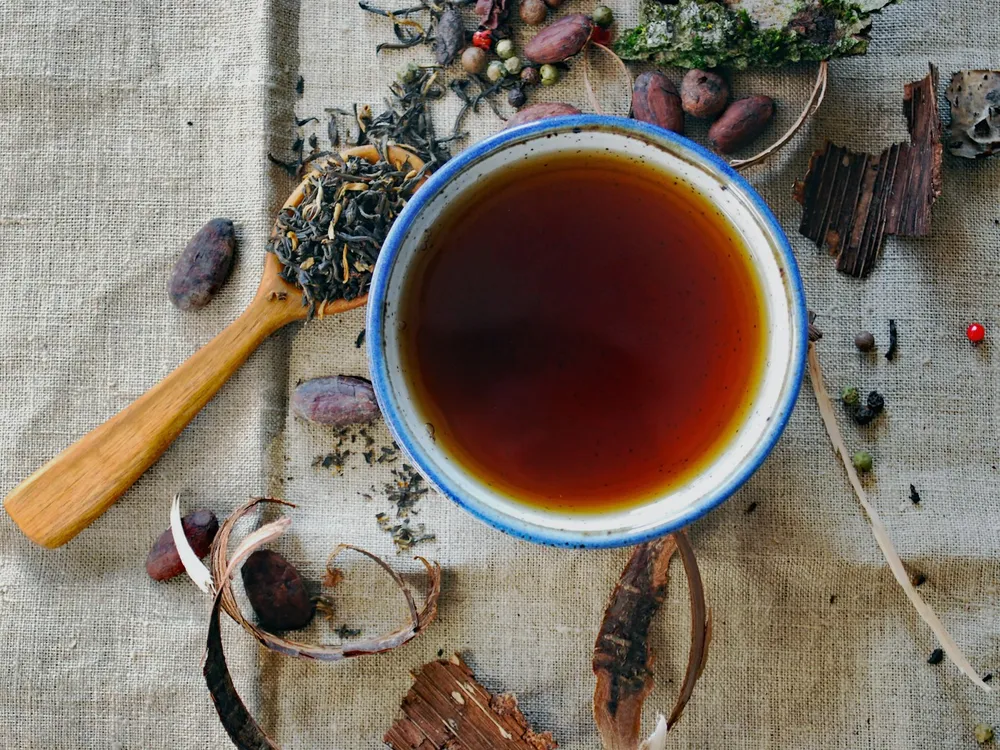

Hinchazón abdominal: causas frecuentes y qué puedes hacer
Te levantas con la barriga plana y por la tarde parece que no te cabe el pantalón. Comes cada vez más sano, has quitado el pan, la leche y alguna cosa más, y la hinchazón sigue ahí. Es uno de los motivos de consulta más frecuentes que veo, y casi siempre tiene explicación. En este artículo te cuento las causas más habituales, cuándo conviene consultar con tu médico y qué puedes hacer sin entrar en una lista interminable de alimentos prohibidos.
Hinchazón y distensión: no es lo mismo
Aunque las usemos como sinónimos, los especialistas distinguen dos cosas1:
- Hinchazón: la sensación de tener la barriga llena, tensa o con presión, aunque por fuera no se note.
- Distensión: el aumento visible del perímetro del abdomen, eso de «parezco embarazada» al final del día.
Pueden ir juntas o por separado, y entender cuál predomina ayuda a buscar la causa. Es normal que la barriga cambie a lo largo del día: después de comer el intestino tiene más contenido y más gas. Lo que no es normal es que te moleste, te duela o condicione lo que comes o cómo te vistes.
Cuándo consultar con tu médico
La mayoría de las veces la hinchazón es un problema funcional, es decir, el intestino no tiene una lesión, pero no funciona como debería. Aun así, antes de cambiar tu alimentación conviene descartar otras causas. Consulta con tu médico si la hinchazón va acompañada de alguno de estos signos:
- Pérdida de peso sin buscarla.
- Sangre en las heces o heces negras.
- Anemia o cansancio intenso sin explicación.
- Síntomas que te despiertan por la noche.
- Fiebre, vómitos o un dolor que va a más.
- Un cambio reciente en el ritmo intestinal, sobre todo a partir de los 50 años.
- Antecedentes en tu familia de cáncer de colon, enfermedad celíaca o enfermedad inflamatoria intestinal.
Importante: no te quites el gluten antes de que te hagan las pruebas de celiaquía. Si lo retiras antes, los análisis y la biopsia pueden salir normales aunque tengas la enfermedad.
Causas frecuentes de la hinchazón
La hinchazón casi nunca se debe a una sola cosa. Estas son las causas que más veo en consulta:
1. Estreñimiento
Es una de las causas más frecuentes y de las que más se pasan por alto. Si el intestino va lento, los restos de comida pasan más tiempo fermentando y se acumula más gas. A veces la persona va al baño todos los días, pero con esfuerzo o con sensación de no haber terminado, y no lo identifica como estreñimiento.
2. Cómo comes
Comer deprisa, hablar mucho mientras comes, mascar chicle o beber con pajita hacen que tragues más aire. Las bebidas con gas suman al problema. Son detalles pequeños, pero en personas sensibles marcan la diferencia.
3. Alimentos que fermentan mucho (FODMAP)
Algunos hidratos de carbono, llamados FODMAP, se absorben mal en el intestino delgado y llegan al colon, donde las bacterias los fermentan y producen gas. Están en alimentos muy saludables, como las legumbres, la cebolla, el ajo, algunas frutas o el trigo. En la mayoría de las personas no causan problemas, pero si tienes un intestino más sensible, ese gas se nota más. En personas con colon irritable, reducirlos durante un tiempo mejora la hinchazón3.
4. Un intestino más sensible
En el síndrome del intestino irritable y en otros trastornos digestivos funcionales, el problema muchas veces no es que haya más gas, sino que el intestino lo percibe con más intensidad. Además, en algunas personas los músculos del abdomen y el diafragma reaccionan de forma poco coordinada al gas y la barriga se proyecta hacia fuera1,2. Por eso dos personas pueden comer lo mismo y solo una de ellas se hincha.
5. Sobrecrecimiento bacteriano (SIBO)
Cuando hay más bacterias de lo normal en el intestino delgado, la fermentación empieza antes y aparecen hinchazón, gases o diarrea poco después de comer. El diagnóstico debe hacerlo tu médico con las pruebas adecuadas, y el tratamiento principal es médico, no una dieta por sí sola4.
6. Las hormonas y el estrés
Muchas mujeres notan más hinchazón en los días antes de la regla o durante la menopausia, por los cambios hormonales. Y el estrés también influye: el intestino y el cerebro están muy conectados, y una época de nervios se nota en la digestión.
Qué puedes hacer desde hoy

Estas pautas son generales y ayudan a muchas personas. No sustituyen una valoración individual, pero son un buen punto de partida:
- Come despacio y sin pantallas: mastica bien y deja los cubiertos en el plato entre bocado y bocado. Así tragas menos aire y la digestión empieza mejor.
- Mantén horarios regulares: el intestino agradece la rutina, tanto en las comidas como en el momento de ir al baño.
- Revisa las bebidas con gas y los chicles: prueba unas semanas sin ellos y observa si notas diferencia.
- Aumenta la fibra poco a poco: si comes poca fruta, verdura o legumbre, súbela de forma progresiva. Si la aumentas de golpe, la hinchazón puede empeorar al principio.
- Bebe suficiente agua, sobre todo si tomas más fibra.
- Muévete después de comer: caminar ayuda a que el gas avance y se expulse. En un estudio con personas con hinchazón, la actividad física mejoró la eliminación del gas intestinal5.
- Apunta lo que notas: un diario de comidas y síntomas durante dos semanas ayuda a ver patrones que de memoria se escapan, como la relación con el estrés, el ciclo menstrual o el estreñimiento.
Por qué quitar alimentos no suele ser la solución
Cuando algo nos sienta mal, lo lógico parece quitarlo. El problema es que la hinchazón tiene muchas causas a la vez y es fácil culpar al alimento equivocado. Hoy fue el pan, mañana la lechuga y pasado el yogur. Así, muchas personas acaban comiendo cada vez menos variado, con miedo y sin mejorar.
Quitar alimentos sin una pauta tiene varios riesgos:
- La dieta pierde fibra y variedad, y eso afecta a tu microbiota y puede empeorar el estreñimiento.
- Es fácil que falten nutrientes, como el calcio si eliminas los lácteos.
- Comer se convierte en una fuente de ansiedad, y el estrés empeora los síntomas digestivos.
Incluso la dieta baja en FODMAP, que sí tiene evidencia en el colon irritable, no está pensada para siempre. Se hace en fases: una retirada temporal, una reintroducción ordenada para saber qué toleras y en qué cantidad, y una dieta final lo más amplia posible3. Hacerla sin acompañamiento suele terminar en una restricción que no tiene fin.
Mi objetivo en consulta es justo el contrario: que entiendas qué le pasa a tu intestino y que vuelvas a comer variado y sin miedo.
Cómo te ayudo en consulta en Jaén
Como nutricionista en Jaén especializada en patología digestiva, trabajo la hinchazón dentro del programa digestivo, en consulta presencial o online:
- Revisamos tus síntomas, tus análisis y tus pruebas, y si hace falta te derivo a tu médico.
- Analizamos tu diario de comidas y síntomas para encontrar el patrón.
- Trabajamos el ritmo intestinal, la forma de comer y la fibra antes de quitar nada.
- Si tiene sentido, hacemos una dieta baja en FODMAP bien planteada, con su reintroducción.
- Como farmacéutica, reviso también tu medicación y los suplementos que tomas.

Isabel Lara Muñoz es dietista-nutricionista colegiada (CODINAN AND-01693) y farmacéutica por la Universidad de Granada, especializada en patología digestiva y nutrición oncológica. Pasa consulta en Jaén y online.
Referencias
- Lacy BE, Cangemi D, Vazquez-Roque M. Management of chronic abdominal distension and bloating. Clin Gastroenterol Hepatol. 2021;19(2):219-231. doi:10.1016/j.cgh.2020.03.056
- Mearin F, Lacy BE, Chang L, et al. Bowel disorders. Gastroenterology. 2016;150(6):1393-1407. doi:10.1053/j.gastro.2016.02.031
- Halmos EP, Power VA, Shepherd SJ, et al. A diet low in FODMAPs reduces symptoms of irritable bowel syndrome. Gastroenterology. 2014;146(1):67-75. doi:10.1053/j.gastro.2013.09.046
- Pimentel M, Saad RJ, Long MD, Rao SSC. ACG clinical guideline: small intestinal bacterial overgrowth. Am J Gastroenterol. 2020;115(2):165-178. doi:10.14309/ajg.0000000000000501
- Villoria A, Serra J, Azpiroz F, Malagelada JR. Physical activity and intestinal gas clearance in patients with bloating. Am J Gastroenterol. 2006;101(11):2552-2557. doi:10.1111/j.1572-0241.2006.00873.x
Este artículo es divulgativo y no sustituye la valoración de tu médico ni la de un profesional sanitario.